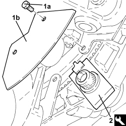
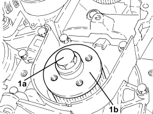
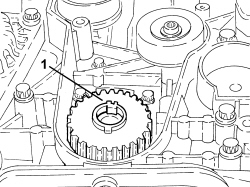

1032B44 TOOTHED DRIVE PULLEY - R + R WITH TIMING BELT REMOVED
- Path
- Procedures > 10 ENGINE > 1032 TIMING SYSTEM > 1032B BELT TIMING SYSTEM > 1032B44 TOOTHED DRIVE PULLEY - R + R WITH TIMING BELT REMOVED
- Kind
- repair procedure (removal / refitting; the operation number is the code)
- Applies to
- engines: 1.8, 1.9 JTD 8v, 1.9 JTD 16v, 2.4 JTD 20v; all production periods
- Interactive page
- https://sloeber94.github.io/elrnDB-fCrm/en/#/194002150
Applies to: engines: 1.9 JTD 8v, 1.9 JTD 16v; all production periods
 Removing
Removing
 Refitting
Refitting- Fit the safety crossmember and support the power unit.
- Remove the hydraulic jack positioned previously underneath the engine.
1. Undo the bolts (1a) and remove the flywheel guard cover (1b).
2. Fit the flywheel lock.
Tool | Description | Function | Validity |
|---|---|---|---|
2000000700 | Counter-torque | Flywheel lock | 1.9 JTD 8V 1.9 JTD 16V |

Applies to: engines: 1.9 JTD 8v, 1.9 JTD 16v; all production periods
1. Undo the bolt (1a) (left hand thread) and remove the toothed drive pulley (1b).

Applies to: engines: 1.9 JTD 8v, 1.9 JTD 16v; all production periods
Refitting
Removing- Position the toothed timing drive pulley in its housing and secure it tightening the bolt to the recommended torque.
Component | Fastening | dia | Value (daNm) | Validity |
|---|---|---|---|---|
Toothed drive pulley | Left hand bolt | M16 | (crankshaft side) 32.3 - 35.7 | 1.9 JTD 16v 1.9 JTD 8v |
- Remove the flywheel lock.
Tool | Description | Function | Validity |
|---|---|---|---|
2000000700 | Counter-torque | Flywheel lock | 1.9 JTD 8V 1.9 JTD 16V |
- Place the flywheel guard cover back in its housing and secure it using the bolts.
- Position a hydraulic jack beneath the engine.
- Remove the safety crossmember used for supporting the power unit.
Applies to: engines: 2.4 JTD 20v; all production periods
- On this version it is not possible to remove/refit the toothed drive pulley on the car.
- To perform this operation, remove/refit the power unit
Op. 1004B14 POWER UNIT WITH AUTOMATIC TRANSMISSION R + R
and then work at the bench, customising the engine service procedures for this operation.
Applies to: engines: 1.8; all production periods
Removing
Refitting1. Remove the toothed drive pulley from the crankshaft.

Applies to: engines: 1.8; all production periods
Refitting
Removing- Place the toothed drive pulley in its housing on the crankshaft.